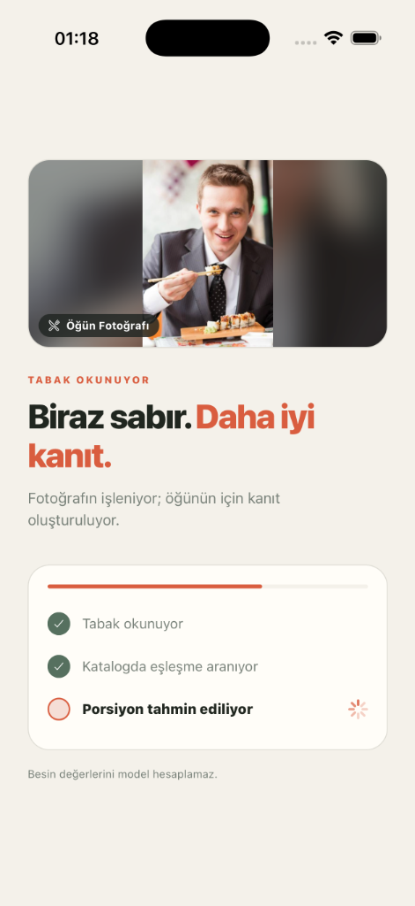
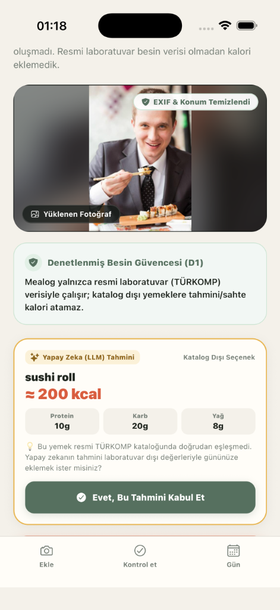
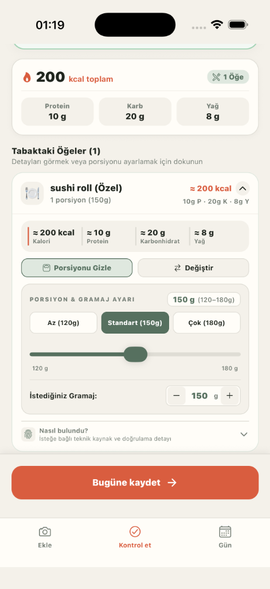
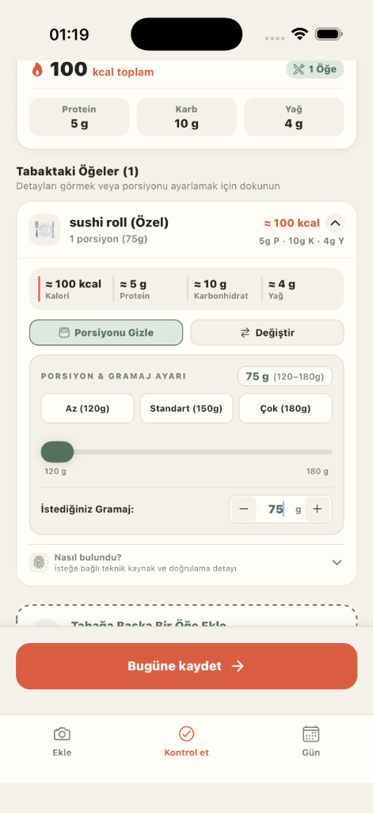

Privacy-minimized review, with a data flywheel that is still deliberately human.
This companion report separates what Mealog ships and tests today from the production path that remains proposed. It is a static evidence brief, not a Loom recording and not proof of deployment or broad live-provider accuracy.
Reading rule: a correction event is a signal for review, not a nutrition label and not automatic training data. No section below claims that a model, catalogue, or alias updates itself.
SHIPPED
Closed-set resolution, review states, request idempotency, and privacy-aware telemetry prototype.
TESTED
Metadata sanitization, PII text redaction, image validation, and standalone RGBA face-blurring utility.
PROPOSED
Durable human review, licensed label curation, and offline release gates for a future data loop.
NOT TRAINED
No checkpoint, training run, held-out training result, production deployment, or recorded Loom is claimed.
01 · Ingress
The request boundary is privacy-aware before perception begins.
What is active
Image signatures and size are validated before provider use.
JPEG, PNG, WebP, and GIF metadata is sanitized in memory, including supported EXIF/GPS, IPTC, comments, and text metadata.
PII is redacted from supported text fields before telemetry is appended.
Meal photos and raw provider envelopes are not telemetry fields and are not persistently stored by the correction prototype.
What the boundary does not cover
HEIC/HEIF/AVIF metadata item stripping is not established by the current sanitizer.
EXIF stripping is not the same as pixel-level face anonymization.
A clean health response or a demo screen is not evidence of deployment, retention, or provider accuracy.
02 · Face privacy
Face blurring is a tested module, not a live JPEG guarantee.
Important boundary:blurFacesInPixelArray and detectFaceRegions are pure TypeScript RGBA utilities with focused tests. D14 keeps them decoupled from the active compressed-image edge path. The repository does not prove that every live JPEG is decoded, face-blurred, and re-encoded before Gemini receives it.
A client camera canvas or an asynchronous image worker is the documented integration path for a future end-to-end pixel guarantee. Until that is wired and verified, the honest claim is metadata sanitization plus a standalone tested utility—not automatic biometric masking.
03 · Nutrition safety
Models observe; the catalogue and pipeline own the numbers.
1
Provider observation
The provider may return food observations and uncertainty. It is not authoritative for calories or grams.
2
Closed-set resolution
Retrieval proposes catalogue candidates. Resolution returns a canonical food_id or ABSTAIN; it never creates a free-text nutrition identity.
3
Authoritative calculation
pipeline/nutrition.py derives nutrient numbers from the canonical record and portion provenance. Unsupported or ambiguous inputs remain review work.
04 · Review
Correction is explicit and item-scoped.
What a user can correct
The review flow exposes identity, count, and portion clarification. The correction endpoint recomputes the changed item from catalogue-backed values rather than trusting client-supplied grams or nutrients.
What degraded means
Degraded provider results propagate through the API and mobile result and require review. They cannot silently become auto_accept. Unknown quantity remains unknown; no visual count is fabricated.
05 · Shipped telemetry prototype
Useful correction signals without pretending they are labels.
Mobile review action→metadata-only event→PII redaction→hashed idempotency key→process-local JSONL
The correction event endpoint requires X-User-Id for rate limiting, but the prototype does not persist that identifier. Demo mode does not emit telemetry. The store is process-local rather than durable, lakehouse-backed, or safe for multi-instance aggregation; without a stored user ID, a future delete request cannot target an individual row.
Operators may run scripts/curate_dataset.py to prepare candidates for human review. The script does not create golden labels, update locale packs, fine-tune a model, or promote a release.
06 · Proposed data flywheel
Production learning is a gated workflow, not an automatic side effect.
This is a proposed operating path. Each transition needs an owner, provenance, and a regression result. A reviewed correction can become training or catalogue evidence only after human verification and licensing checks. There is no automatic self-training, automatic catalogue update, alias promotion, or model promotion in the current repository.
07 · Training status
The plan is documented; the run is not.
D8 and the fine-tuning plan specify a rented frontier VLM, an FT-1 mass regressor, and an FT-2 locale adapter as future work. The repository has no checkpoint, training run, GPU-hour record, spend, or held-out training score to report. The local screenshot pack is test evidence, not a training set.
EatBetter statements are limited to observed public surfaces.
09 · Optional delivery visuals
Attach the walkthrough images at delivery.
These slots preserve the visual structure of the former presentation without committing user-provided photo binaries. Before presenting locally, place the exact files under docs/loom_assets/. The report will resolve them relative to this HTML file.
Step 1 · Original meal photo

Step 2 · Processing and analysis state

Step 3 · D1 abstention state

Step 4 · Review state

Step 5 · Portion adjustmentStep 6 · Staging-photo attachment, if separately approvedSecondary example · Raw inputSecondary example · Sanitized output
Evidence boundary: these are attachment slots, not proof that the files are present in this commit. Keep any user-provided or unlicensed binaries outside Git and attach them only through the approved delivery channel.